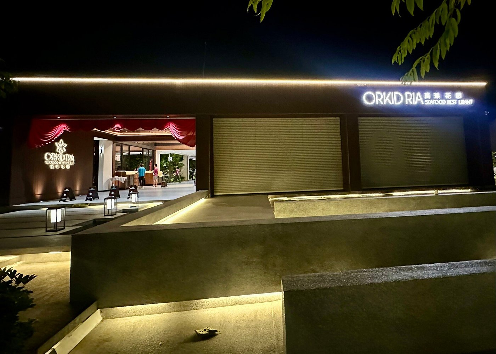
Jalan Pantai Tengah, LangkawiVisit Orkid Ria
Your Langkawi
Seafood Table.
Find us on Jalan Pantai Tengah. Call ahead to discuss your group size and preferred arrival time.
Address
Lot 418, Jalan Pantai Tengah
Jalan Teluk Baru, Mukim Kedawang
07100 Langkawi, Kedah
Contact
Gallery · Orkid Ria
A Taste of Life Here.
By the water. Around the table.
A closer look at your next visit.
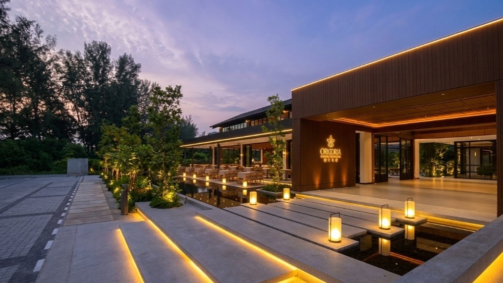
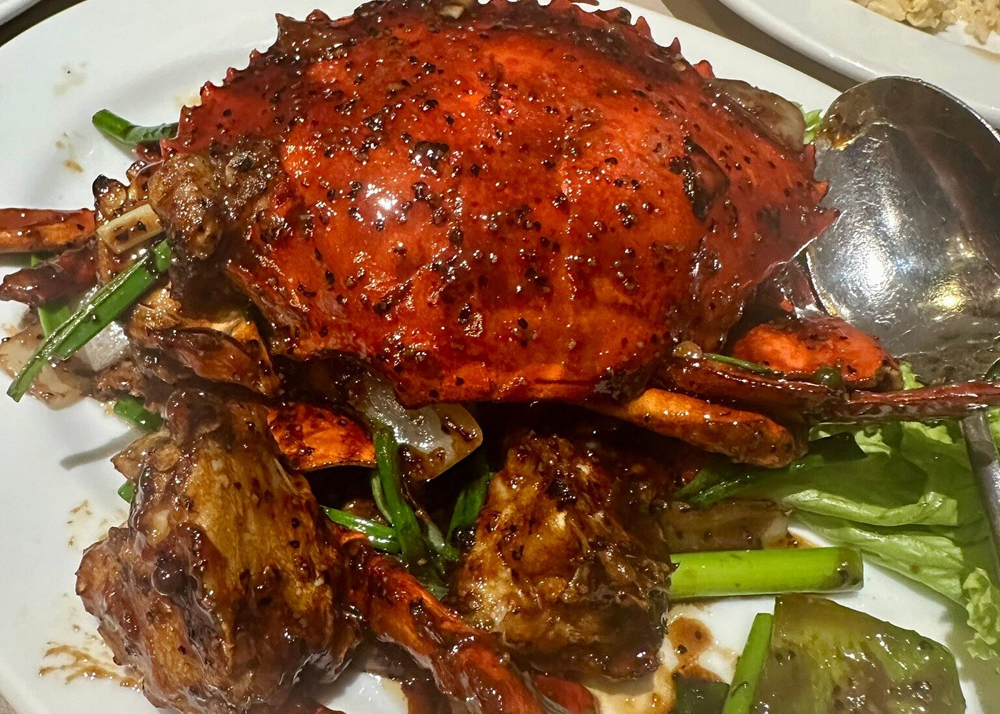
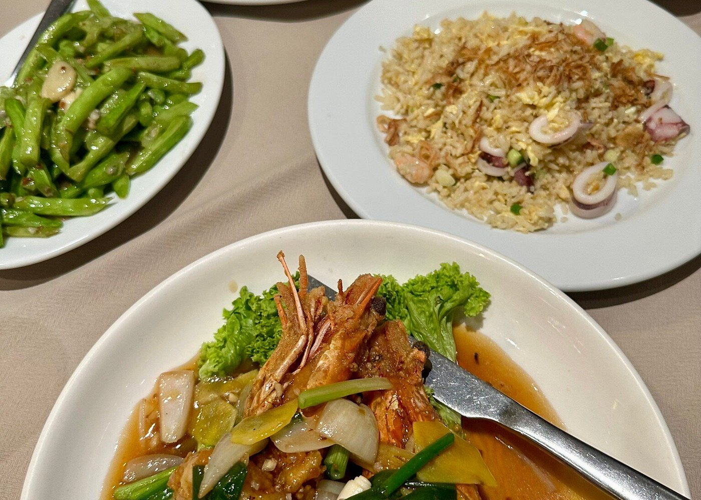
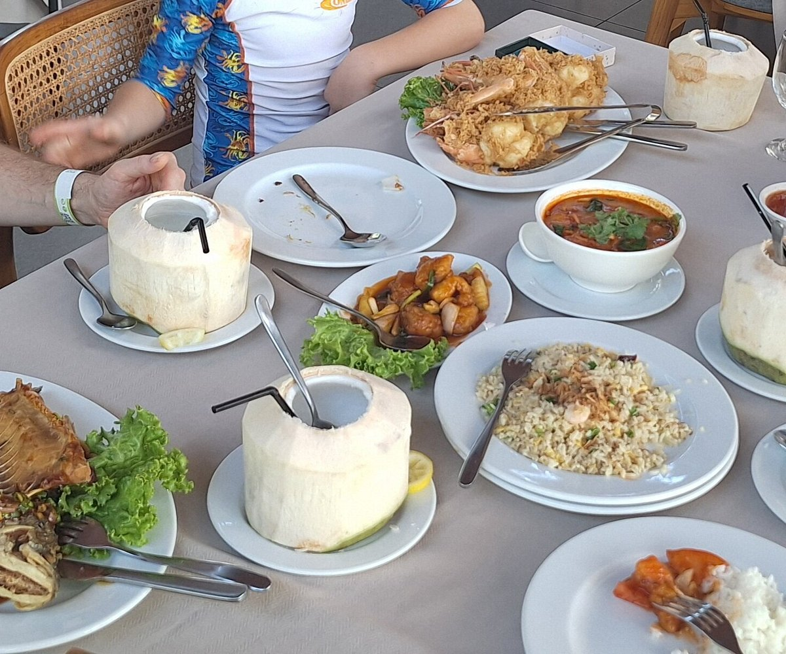
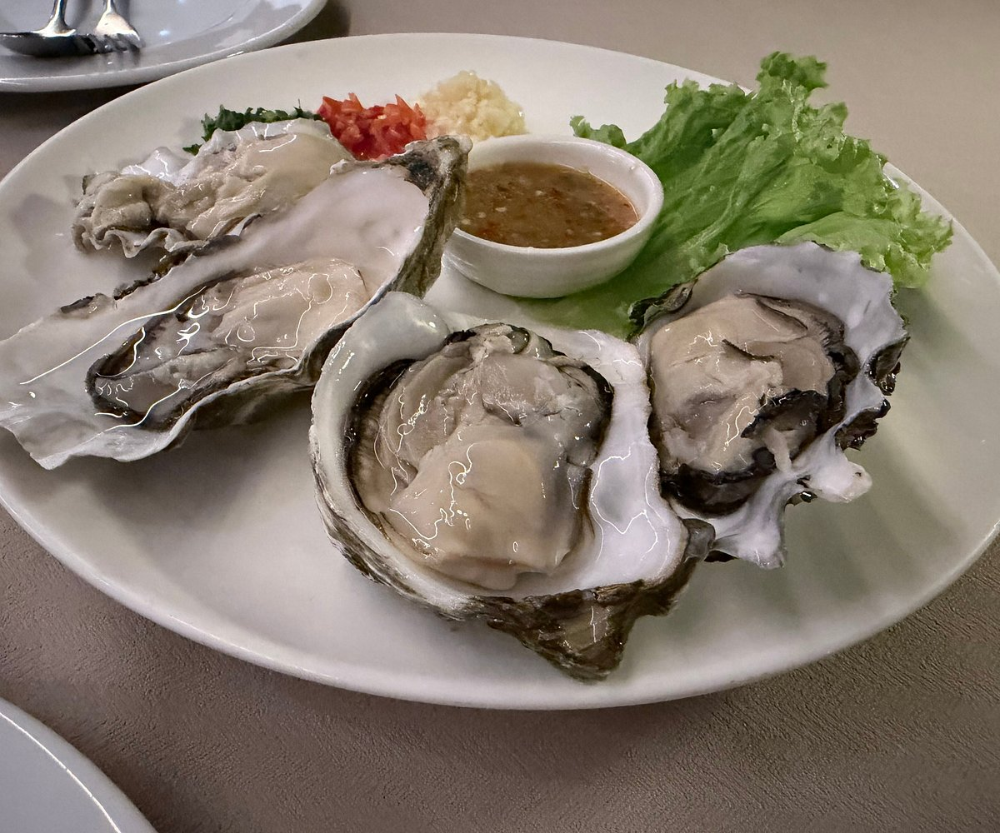
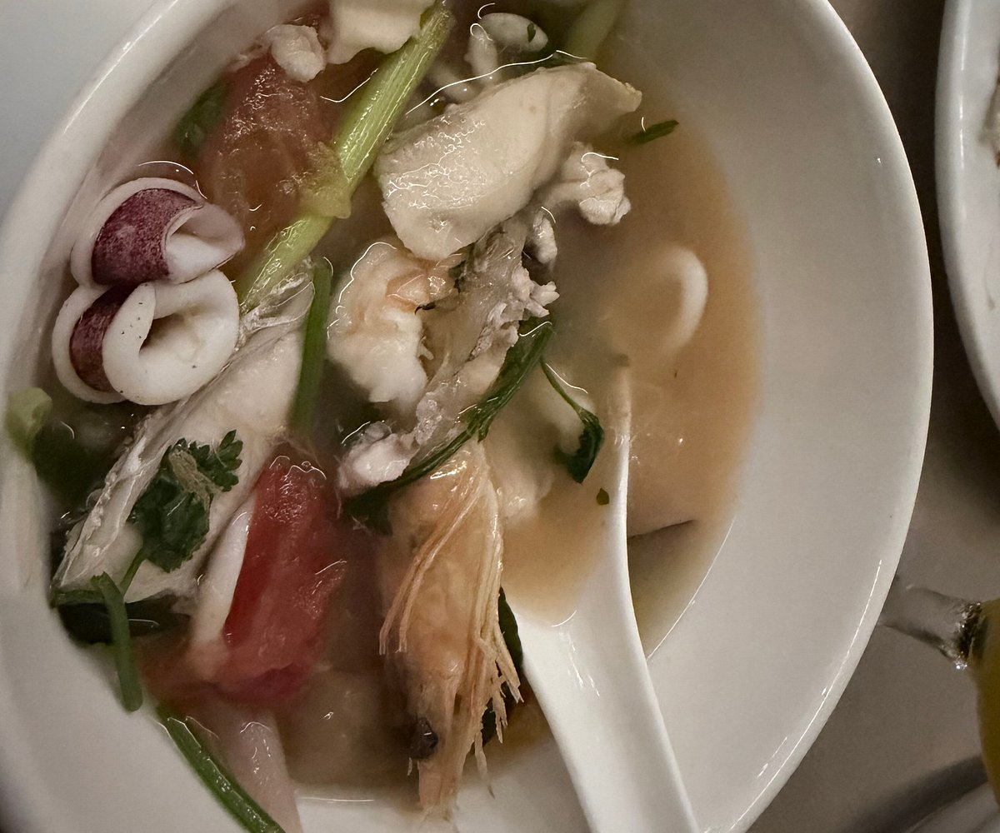
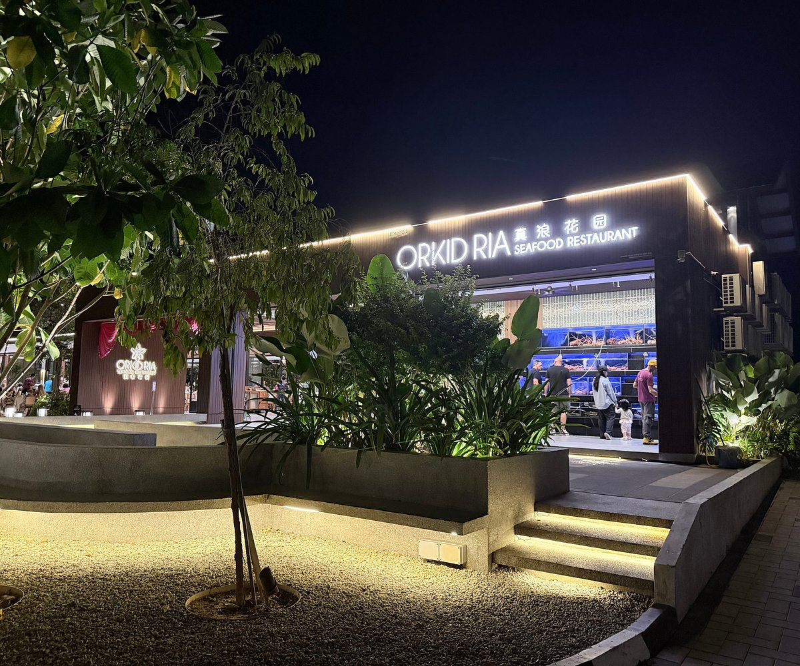
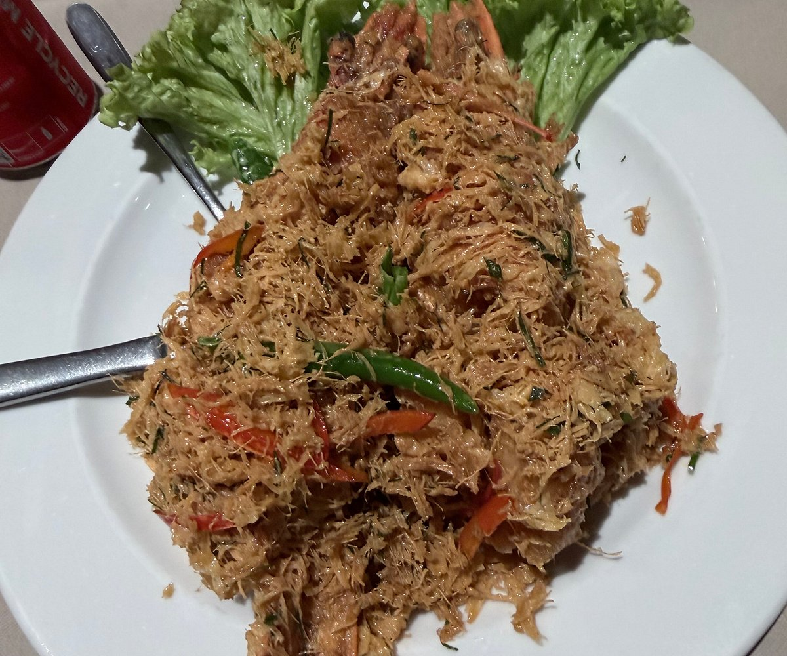
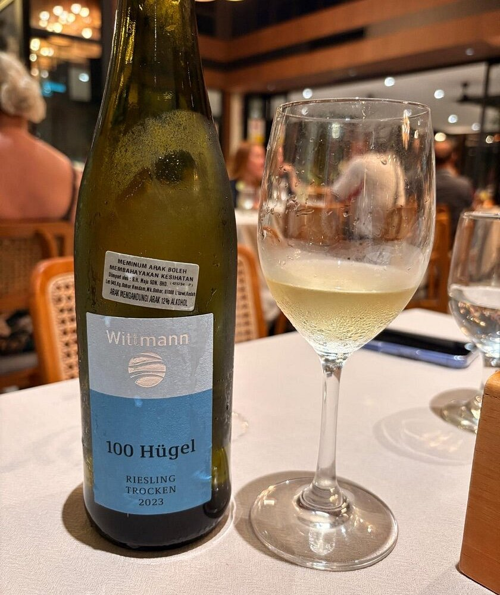
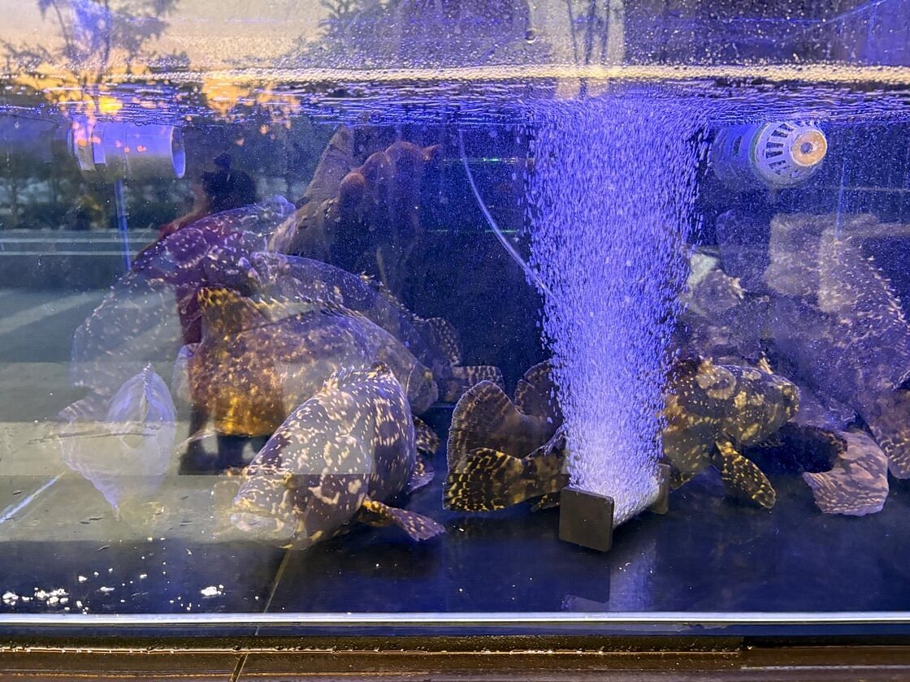
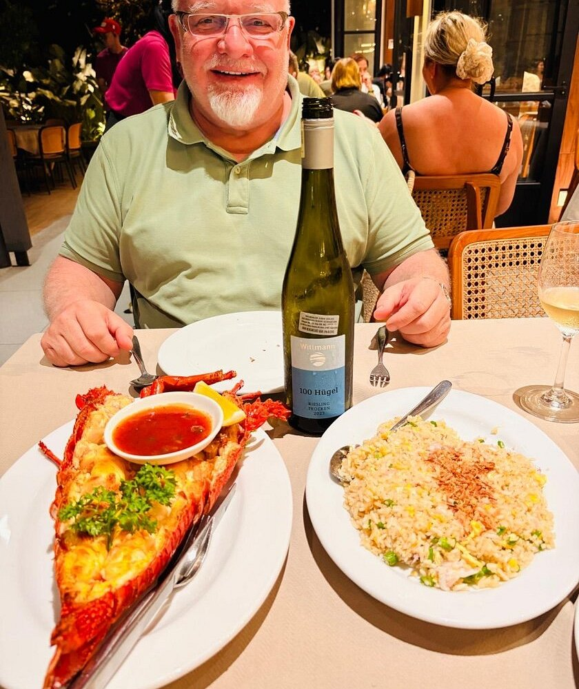
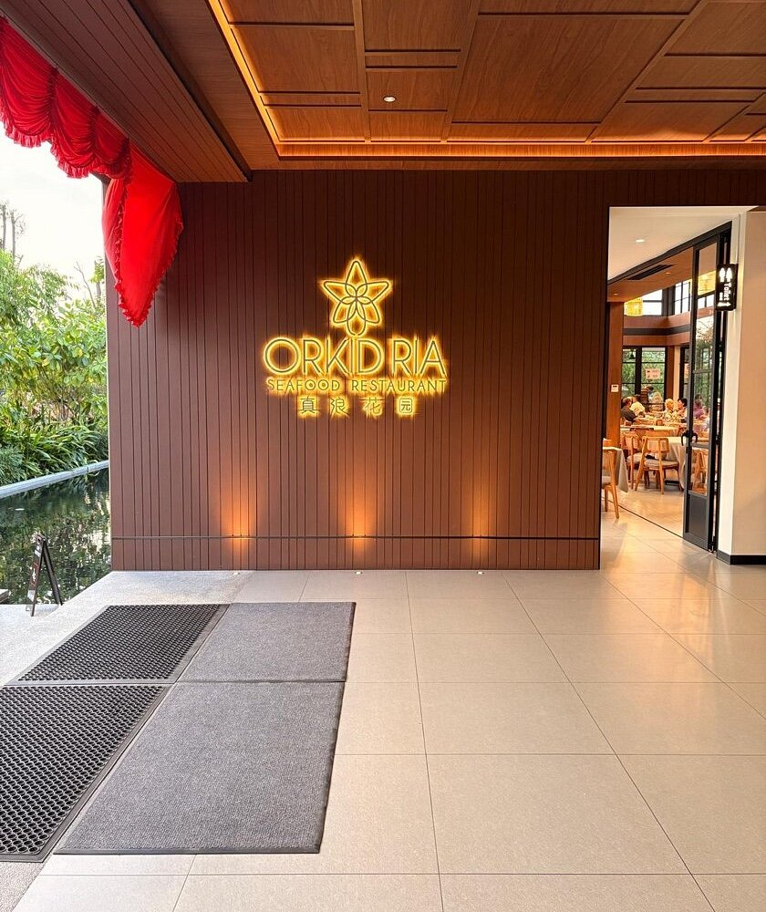